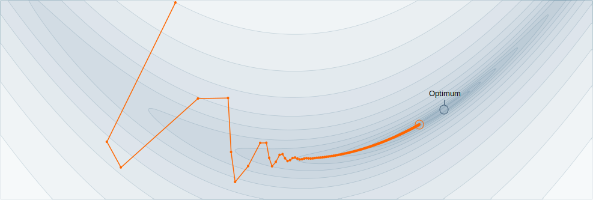

Design a robust optimizer for any given neural network training task. Submit your optimizer as a Python file to this challenge. Winners will be announced the Applied Machine Learning Day 2020 and make an impact in the research of ML practitioners.
AutoTrain challenges you to submit optimizers that work reliably on any deep learning task without task-specific tuning. It separates AutoML into (1) fully automatic training of a model and (2) model selection, and tackles the first aspect. Your submissions will be benchmarked on a secret set of architecture/dataset pairs inspired by common deep learning tasks. The optimizers need to achieve a target test loss as fast as possible. The fastest on average wins the competition. The winning optimizers will be made publicly available as open source and bring significant value to practitioners and researchers, by removing the need of expensive hyperparameter tuning, and by providing fair benchmarking of all optimizers.
train.py.
A good start is to slightly modify our provided Adam optimizer code and test it on the task provided in example_tasks/.
README.md team name and team members,train.py code of your optimizer,report.pdf 4 pages (two-columns) report describing your submission.